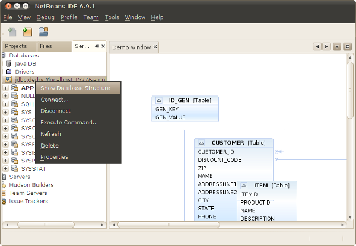
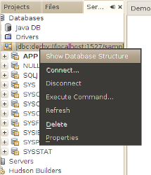
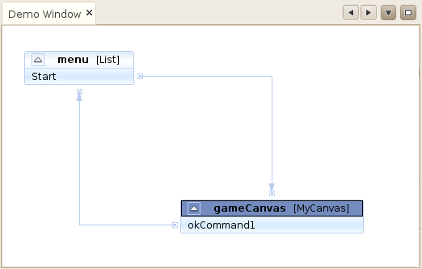

Apache NetBeans
Apache NetBeansLatest release
NetBeans Visual Database Explorer Tutorial
| This tutorial needs a review. You can edit it in GitHub following these contribution guidelines. |
In this tutorial, you will learn how to create a visualizer on top of the content of a database. You will create an action, attach it to a connection node, and then use it to connect to the database, visualizing its content in a Visual Library scene, as shown below:

All the information you need to know for working with the Visual Library API, as well as with the Database Explorer API, is collected at the following locations:
Also, see Roman Strobl’s Visual Library Screencast on Javalobby.
Before continuing, you are assumed to have read the NetBeans Visual Library Tutorial, which gives you the basics for working with the Visual Library. The basics discussed in that tutorial will not be repeated here.
Setting Up the Module
In this section, we use wizards to create a module project and a custom window component.
-
Choose File > New Project (Ctrl+Shift+N). Under Categories, select NetBeans Modules. Under Projects, select Module. Click Next.
-
In the Name and Location panel, type
DatabaseExplorerDemoin the Project Name field. Change the Project Location to any directory on your computer. Leave the Standalone Module option and Set as Main Project checkbox selected. Click Next.
-
In the Basic Module Configuration panel, type
org.demoin Code Name Base.
1.
Select "Generate XML Layer". Leave the locations of both the localizing bundle and the XML layer file so that they will be stored in a package with the name org/demo . Click Finish.
The IDE creates the DatabaseExplorerDemo project. The project contains all of your sources and project metadata, such as the project’s Ant build script. The project opens in the IDE. You can view its logical structure in the Projects window (Ctrl+1) and its file structure in the Files window (Ctrl+2).
-
Right-click the project, choose Properties, click Libraries in the Project Properties dialog box and declare a dependency on the following APIs:
| You need to set an implementation dependency on the Database Explorer API. Do so by selecting the Database Explorer item in the Libraries panel of the Project Properties dialog, clicking Edit, and then clicking 'Implementation Version'. By doing this, you are setting a dependency on internal classes that will change in future releases. Currently there is no other way of completing the scenario in this tutorial than to set an implementation dependency. |
-
Click OK to close the Project Properties dialog.
-
Create a package named "org.demo.resources" and put the following images into it:
Creating the Action
We will create an action that will only be enabled if the activated node has the ConnectionNode from the Database Explorer API in its Lookup.
-
Right-click the module project, and create a new class extending the
BaseActionclass from the Database Explorer API:
import java.sql.Connection;
import org.netbeans.api.db.explorer.ConnectionManager;
import org.netbeans.api.db.explorer.DatabaseConnection;
import org.netbeans.modules.db.explorer.action.BaseAction;
import org.openide.nodes.Node;
import org.openide.util.HelpCtx;
public final class ShowDatabaseStructureAction extends BaseAction {
@Override
protected void performAction(Node[] nodes) {
}
@Override
protected boolean enable(Node[] activatedNodes) {
return true;
}
@Override
public String getName() {
return "Show Database Structure";
}
@Override
public HelpCtx getHelpCtx() {
return HelpCtx.DEFAULT_HELP;
}
}-
Register the Action class as follows:
<folder name="Databases">
<folder name="Explorer">
<folder name="Connection">
<folder name="Actions">
<file name="org-demo-ShowDatabaseStructureAction.instance"/>
</folder>
</folder>
</folder>
</folder>You have now registered an Action such that it will be attached to the connection node in the Services window:

Creating the Window
In this section, we create a new window component that will hold our scene.
-
Right-click the module project, choose New > Other and choose Window from the Module Development category. Click Next.
-
Choose
editorin the drop-down list. Do not select Open on Application Start. Click Next.
-
Type
Demoin Class Name Prefix. Optionally, add an icon with a dimension of 16x16 pixels. Click Finish.
-
Right-click in the
DemoTopComponentin Design mode, choose Set Layout, and select BorderLayout.
-
Switch to Source mode and change the
getPersistenceTypemethod to returnTopComponent.PERSISTENCE_NEVER.
Creating the Scene
Programming with the Visual Library API is similar to programming in Swing. You build and modify a tree of visual elements that are called "widgets". The root of the tree is represented by a Scene class which holds all the visual data of the scene. The scene is a widget. You have to create a scene view, which is a JComponent. You must then add the JComponent to a JScrollPane.
In this section, we add a JScrollPane to our TopComponent. Then we create a new Visual Library scene in a separate Java source file. Next, we pass the scene to the TopComponent, so that it can be displayed in the TopComponent’s JScrollPane. We then install the module project and display our first scene.
-
Use the Palette (Ctrl-Shift-8) to drop a
JScrollPaneon the TopComponent.
1.
In the org.demo package, create a Java class called DBGraphScene . Let the class extend VMDGraphScene .
A red error underline and a lightbulb appears. Let the IDE generate the import statement.
A red error underline and a lightbulb appears again. Let the IDE generate the class’s abstract methods.
-
Replace the content of the class with the following:
import java.awt.Image;
import java.awt.Point;
import java.util.Arrays;
import java.util.List;
import org.netbeans.api.visual.vmd.VMDGraphScene;
import org.netbeans.api.visual.vmd.VMDNodeWidget;
import org.netbeans.api.visual.vmd.VMDPinWidget;
import org.openide.util.ImageUtilities;
public class DBGraphScene extends VMDGraphScene{
private static final Image IMAGE_LIST = ImageUtilities.loadImage("org/demo/resources/list_16.png"); // NOI18N
private static final Image IMAGE_CANVAS = ImageUtilities.loadImage("org/demo/resources/custom_displayable_16.png"); // NOI18N
private static final Image IMAGE_COMMAND = ImageUtilities.loadImage("org/demo/resources/command_16.png"); // NOI18N
private static final Image IMAGE_ITEM = ImageUtilities.loadImage("org/demo/resources/item_16.png"); // NOI18N
private static final Image GLYPH_PRE_CODE = ImageUtilities.loadImage("org/demo/resources/preCodeGlyph.png"); // NOI18N
private static final Image GLYPH_POST_CODE = ImageUtilities.loadImage("org/demo/resources/postCodeGlyph.png"); // NOI18N
private static final Image GLYPH_CANCEL = ImageUtilities.loadImage("org/demo/resources/cancelGlyph.png"); // NOI18N
private static int nodeID = 1;
private static int edgeID = 1;
public DBGraphScene() {
String mobile = createNode (this, 100, 100, IMAGE_LIST, "menu", "List", null);
createPin (this, mobile, "start", IMAGE_ITEM, "Start", "Element");
String game = createNode (this, 600, 100, IMAGE_CANVAS, "gameCanvas", "MyCanvas", Arrays.asList (GLYPH_PRE_CODE, GLYPH_CANCEL, GLYPH_POST_CODE));
createPin (this, game, "ok", IMAGE_COMMAND, "okCommand1", "Command");
createEdge (this, "start", game);
createEdge (this, "ok", mobile);
}
private static String createNode (VMDGraphScene scene, int x, int y, Image image, String name, String type, List<Image> glyphs) {
String nodeID = "node" + DBGraphScene.nodeID ++;
VMDNodeWidget widget = (VMDNodeWidget) scene.addNode (nodeID);
widget.setPreferredLocation (new Point (x, y));
widget.setNodeProperties (image, name, type, glyphs);
scene.addPin (nodeID, nodeID + VMDGraphScene.PIN_ID_DEFAULT_SUFFIX);
return nodeID;
}
private static void createPin (VMDGraphScene scene, String nodeID, String pinID, Image image, String name, String type) {
((VMDPinWidget) scene.addPin (nodeID, pinID)).setProperties (name, null);
}
private static void createEdge (VMDGraphScene scene, String sourcePinID, String targetNodeID) {
String edgeID = "edge" + DBGraphScene.edgeID ++;
scene.addEdge (edgeID);
scene.setEdgeSource (edgeID, sourcePinID);
scene.setEdgeTarget (edgeID, targetNodeID + VMDGraphScene.PIN_ID_DEFAULT_SUFFIX);
}
}-
Add an instance variable for the scene to the top of the TopComponent’s source code:
private DBGraphScene scene = new DBGraphScene();Add the scene to the JScrollPane’s ViewportView, at the end of the TopComponent’s constructor:
jScrollPane1.setViewportView( scene.createView() );-
Before continuining, check that the content of the filesystem tags in your layer.xml file is as follows:
<filesystem>
<folder name="Actions">
<folder name="Window">
<file name="org-demo-DemoAction.instance">
<attr name="component" methodvalue="org.demo.DemoTopComponent.findInstance"/>
<attr name="displayName" bundlevalue="org.demo.Bundle#CTL_DemoAction"/>
<attr name="instanceCreate" methodvalue="org.openide.windows.TopComponent.openAction"/>
</file>
</folder>
</folder>
<folder name="Menu">
<folder name="Window">
<file name="DemoAction.shadow">
<attr name="originalFile" stringvalue="Actions/Window/org-demo-DemoAction.instance"/>
</file>
</folder>
</folder>
<folder name="Windows2">
<folder name="Components">
<file name="DemoTopComponent.settings" url="DemoTopComponentSettings.xml"/>
</folder>
<folder name="Modes">
<folder name="editor">
<file name="DemoTopComponent.wstcref" url="DemoTopComponentWstcref.xml"/>
</folder>
</folder>
</folder>
<folder name="Databases">
<folder name="Explorer">
<folder name="Connection">
<folder name="Actions">
<file name="org-demo-ShowDatabaseStructureAction.instance"/>
</folder>
</folder>
</folder>
</folder>
</filesystem>-
Right-click the module and choose Run. Select "Demo" from the Window menu. The window component should open and show you the following:

Connect the Database to the Scene
In this section, we connect to a selected database by using the Database Explorer API. We then pass the connection to the scene. In the scene, we parse the connection, extract the data, and visually display the data in the scene.
-
In your action class, you need to make a connection to a selected database and pass it to your window:
import java.sql.Connection;
import org.netbeans.api.db.explorer.ConnectionManager;
import org.netbeans.api.db.explorer.DatabaseConnection;
import org.netbeans.modules.db.explorer.action.BaseAction;
import org.openide.nodes.Node;
import org.openide.util.HelpCtx;
public final class ShowDatabaseStructureAction extends BaseAction {
@Override
protected void performAction(Node[] nodes) {
DatabaseConnection dbconn = nodes[0].getLookup().lookup(DatabaseConnection.class);
if (dbconn.getJDBCConnection() == null) {
ConnectionManager.getDefault().showConnectionDialog(dbconn);
}
Connection connection = dbconn.getJDBCConnection();
DemoTopComponent win = DemoTopComponent.findInstance();
win.open();
win.requestActive();
win.setConnection(connection);
}
@Override
protected boolean enable(Node[] activatedNodes) {
if (activatedNodes == null || activatedNodes.length != 1) {
return false;
}
boolean enabled = false;
DatabaseConnection dbconn = activatedNodes[0].getLookup().lookup(DatabaseConnection.class);
if (dbconn != null) {
enabled = true;
}
return enabled;
}
@Override
public String getName() {
return "Show Database Structure";
}
@Override
public HelpCtx getHelpCtx() {
return HelpCtx.DEFAULT_HELP;
}
}A red error underline will appear below the last line in the performAction , because it refers to a statement that we have not defined yet. We will do so in the next step.
-
Back in your window component, you need to receive the connection and call the scene, as shown below:
...
import java.sql.Connection;
...
final class DemoTopComponent extends TopComponent {
private static DemoTopComponent instance;
private static final String PREFERRED_ID = "DemoTopComponent";
private DBGraphScene scene;
private DemoTopComponent() {
initComponents();
setName(NbBundle.getMessage(DemoTopComponent.class, "CTL_DemoTopComponent"));
setToolTipText(NbBundle.getMessage(DemoTopComponent.class, "HINT_DemoTopComponent"));
}
public void setConnection(Connection connection){
scene = new DBGraphScene(connection);
jScrollPane1.setViewportView( scene.createView() );
}
...
...
...In the scene, the constructor that receives the connection does not exist yet. We will create it in the next step. Until then, reference to that constructor, above, is underlined in red.
-
In the
DBGraphSceneclass, extend the code as follows:
public class DBGraphScene extends VMDGraphScene {
private static final Image IMAGE_LIST = ImageUtilities.loadImage("org/demo/resources/list_16.png"); // NOI18N
private static final Image IMAGE_ITEM = ImageUtilities.loadImage("org/demo/resources/item_16.png"); // NOI18N
private static int edgeID = 1;
public DBGraphScene(Connection connection) {
try {
createSceneFromConnection(connection);
} catch (SQLException e) {
e.printStackTrace();
}
}
private void createSceneFromConnection(Connection jdbcConnection) throws SQLException {
ArrayList<String> tables = new ArrayList<String>();
DatabaseMetaData databaseMetaData = jdbcConnection.getMetaData();
String[] names = {"TABLE"};
ResultSet resultSet = databaseMetaData.getTables(null, "%", "%", names);
while (resultSet.next()) {
String table = resultSet.getString("TABLE_NAME");
tables.add(table);
createNode(this, (int) (Math.random() * 800), (int) (Math.random() * 800), IMAGE_LIST, table, "Table", null);
ResultSet columns = jdbcConnection.getMetaData().getColumns(null, null, table.toUpperCase(), "%");
while (columns.next()) {
String columnName = columns.getString("COLUMN_NAME");
createPin(this, table, table + ":" + columnName, IMAGE_ITEM, columnName, columnName);
}
}
for (String string : tables) {
ResultSet resultSet1 = databaseMetaData.getExportedKeys(null, null, string);
while (resultSet1.next()) {
String pkTable = resultSet1.getString("PKTABLE_NAME");
String pkColumn = resultSet1.getString("PKCOLUMN_NAME");
String fkTable = resultSet1.getString("FKTABLE_NAME");
String fkColumn = resultSet1.getString("FKCOLUMN_NAME");
createEdge(this, fkTable + ":" + fkColumn, pkTable + ":" + pkColumn);
}
}
this.moveTo(null);
}
private static String createNode(VMDGraphScene scene, int x, int y, Image image, String name, String type, java.util.List<Image> glyphs) {
String node = name;
VMDNodeWidget widget = (VMDNodeWidget) scene.addNode(node);
widget.setPreferredLocation(new Point(x, y));
widget.setNodeProperties(image, name, type, glyphs);
return node;
}
private static void createPin(VMDGraphScene scene, String nodeID, String pinID, Image image, String name, String type) {
((VMDPinWidget) scene.addPin(nodeID, pinID)).setProperties(name, null);
}
private static void createEdge(VMDGraphScene scene, String sourcePinID, String targetPinID) {
String edge = "edge" + DBGraphScene.edgeID++;
scene.addEdge(edge);
scene.setEdgeSource(edge, sourcePinID);
scene.setEdgeTarget(edge, targetPinID);
}
private void moveTo(Point point) {
int index = 0;
for (String node : getNodes()) {
getSceneAnimator().animatePreferredLocation(findWidget(node), point != null ? point : new Point(++index * 100, index * 100));
}
}
}The createSceneFromConnection method gets the DatabaseMetadata ( jdbcConnection.getMetaData() ) from the Connection . With the subsequent calls to getTables , the table structure is retrieved and the nodes of the graph are created. For every table, getColumns is called and a Pin is added for every column to the table node. These pins can be used in a subsequent step to create a connection between two tables. Now we iterate through the tables and call getExportedKeys to get hold of the ForeignKeys . For every exported key, an edge is created between the pins of the related columns. The moveTo method does the animation when the window is opened.
-
Run the module again. Open the Services window. Expand the Databases node. Select one of the connection nodes. The "Show Database Structure" menu item, under the File menu, should now be enabled. Select it and now your scene should open and look as follows:
Congratulations, you have completed a Visual Library scene that connects to a database and visually displays its content.
Next Steps
For more information on working with the Visual Library API, see:
With thanks to Toni Epple, who wrote the first version of this tutorial, A Visual Database Explorer for NetBeans.